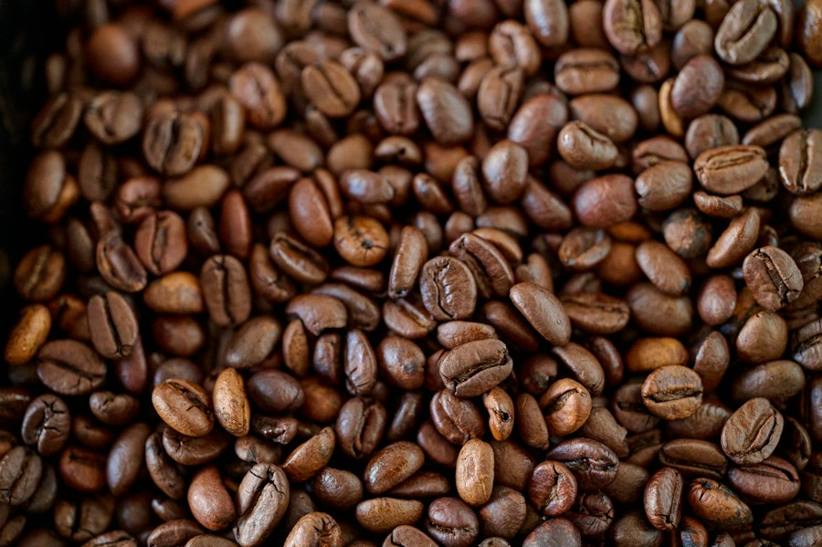
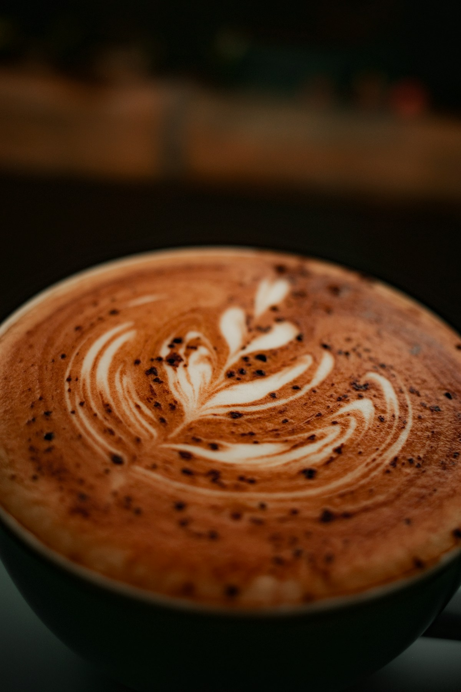

01 / REWARDSETHEREUM

Setiap tegukan
punya nilai.
Kumpulkan poin $SORE setiap kali menikmati menu favorit. Hubungkan wallet untuk melihat identitas Web3 kamu.
YOUR $SORE BALANCE— $SORE
Secangkir kopi pilihan, reward di wallet, dan komunitas yang ikut menentukan masa depan kafe.
Jelajahi Menu ↓Explore Web3 ↗KOPI SORE MEETS WEB3
Pengalaman kafe yang terhubung dengan wallet dan komunitas. Reward dan voting pada halaman ini adalah demo antarmuka.

Kumpulkan poin $SORE setiap kali menikmati menu favorit. Hubungkan wallet untuk melihat identitas Web3 kamu.

KS / 001GENESISNFT membership sebagai konsep akses benefit, event tasting, dan menu rahasia komunitas.
Pilih racikan yang ingin kamu lihat di menu bulan depan.
Voting demo · suara belum dicatat di blockchainTRANSACTIONS
Belum ada transaksi. Pesanan simulasi akan muncul di sini.
Demo Web3 untuk tugas · Wallet hanya membaca alamat akun, tidak meminta tanda tangan atau mengirim transaksi.
SELAMAT DATANG DI KOPI SORE
Dari biji kopi pilihan sampai roti yang baru keluar dari oven—kami percaya momen terbaik sering dimulai dari hal sederhana.
Kenali cerita kami ↗DIBUAT DENGAN SEPENUH HATI


 DIRACIK LANGSUNG DI BAR KAMI
DIRACIK LANGSUNG DI BAR KAMIDARI BAR KECIL KAMI
Barista kami memilih biji dari kebun lokal dan meraciknya satu per satu. Datang untuk kopi, pulang membawa cerita baru.
KAMI MENUNGGU DI SINI
Lokasi demo · Kota Ambon, Maluku
Setiap hari, 08.00 – 22.00